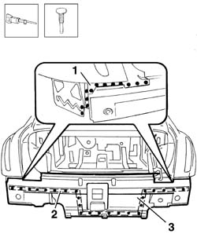
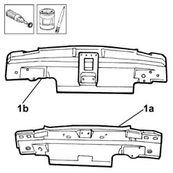
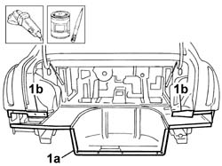
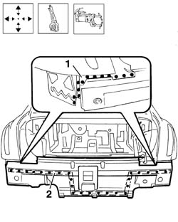

7210B70 REAR LINING
- Path
- Procedures > 72 panels and frames > 7210 REMOVING REFITTING > 7210B STRUCTURAL ELEMENTS (CENTRE AND REAR section) > 7210B70 REAR LINING
- Kind
- repair procedure (removal / refitting; the operation number is the code)
- Applies to
- all engines; all production periods
- Interactive page
- https://sloeber94.github.io/elrnDB-lThss/en/#/501057
Applies to: all engines; all production periods
Applies to: all engines; all production periods
 Removing
Removing
 Refitting
Refitting- Check whether the components connected are distorted through the bodyshell alignment measurements using suitable test equipment (test benches, templates or jigs).
1. Remove the spot welds in the area in contact with the wing, on the left and right sides, using a chamfering machine.
2. Remove the spot welds in the contact area with the boot floor.
3. Detach the rear lining using a hammer and chiself and remove it.

Applies to: all engines; all production periods
Refitting
Removing- Straighten the edges of the panel along the surface of the bodyshell involved.
1. Remove the anti-corrosion treatment using a rotary brush from the entire inner (1a) and outer (1b) perimeter of the replacement part and apply electro-galvanizing paint.

Applies to: all engines; all production periods
1. Remove the residues of the spot welds along the perimeter of the lining in contact with the boot floor (1a) and the wing (1b) using a disc grinder and apply electro-galvanizing paint to the parts ground.

Applies to: all engines; all production periods
- Position the replacement part correctly and secure it using self-locking clamps.
1. Spot weld in the contact areas between the lining and the wing, left and right sides.
2. Spot weld in the contact areas between the lining and the boot floor.

Applies to: all engines; all production periods
- Grind the welds using a disc grinder.
- Check that the welded component is correctly positioned.
- Apply electro-galvanizing paint to the parts ground.